검증이 병목이 됐고, 하네스로 풀어요
발표자는 회사 대시보드 기준으로 한 달에 에이전트 토큰을 3만 달러어치 써요. 그렇게 많이 써 봐도 하네스, 그러니까 규칙과 도구와 세팅을 아무리 잘 갖춰 줘도 일을 믿고 맡기기는 쉽지 않았다고 해요. 요즘 병목이 '검증'으로 옮겨 갔다는 말이 나오는 이유예요. 그래서 이 세미나는 세 질문으로 시작해요. 어떻게 하면 믿고 맡길 수 있을까, 하네스는 어떻게 세팅할까, 에이전트에게 어떤 환경을 만들어 줘야 할까.
코드 한 줄에서 '일' 하나로
슬라이드 위쪽 타임라인이 메타에서 AI를 쓰는 방식의 변화예요. '예전'에는 코드 한두 줄, 많아야 열 줄 자동 완성이었고 사람이 다 썼어요. '지금'은 버그 수정이나 기능 하나처럼 작업을 통째로 맡기고 결과만 봐요. '요즘'은 에이전트 여러 개를 동시에 돌려요. 발표자는 에이전트 창을 열 개 넘게 띄워 한쪽엔 조사, 한쪽엔 버그 수정, 한쪽엔 배포 모니터링을 시킨다고 해요.
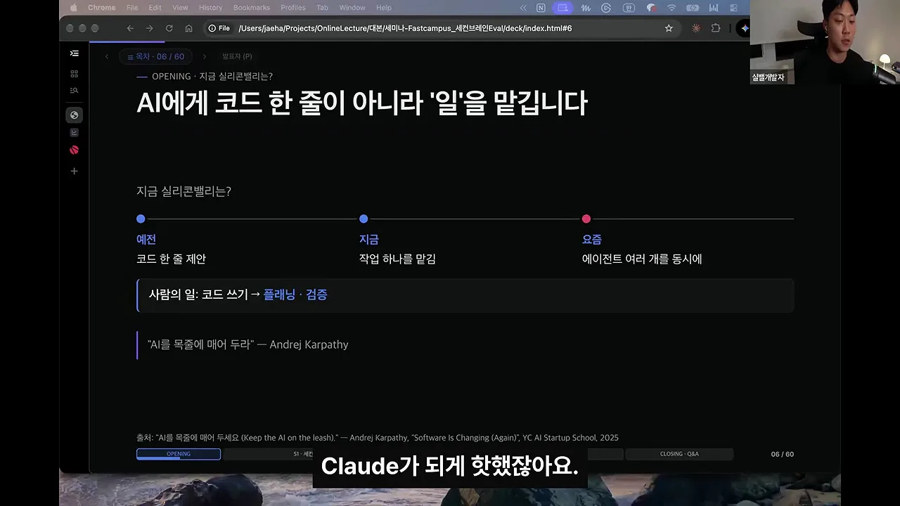
엔지니어가 가장 오래 쓰던 시간은 코드 짜는 시간이었어요. 이제 그건 에이전트가 쉬지 않고 더 많이 해요. 사람에게 남은 건 앞단(에이전트에게 일을 어떻게 나눠 줄지)과 뒷단(받은 결과를 어떻게 검증할지)이에요. 발표자는 Andrej Karpathy의 'AI를 목줄에 매어 두라'는 말을 빌려, 일은 맡기되 일의 범위와 확인 방법이라는 주도권은 사람이 쥐어야 한다고 강조해요.
PR은 커지고 리뷰는 쌓여요
맡기는 양이 늘면 어디가 막힐까요. 발표자는 Faros AI 데이터를 가져와요. 왼쪽 위 카드가 출처예요. 개발자 2만 2천 명, 팀 4천여 개의 2년치 실제 기록에서 같은 조직이 AI를 적게 쓰던 때와 많이 쓰던 때를 비교했어요. 왼쪽 아래 숫자 세 개가 결과예요. PR 크기 +51%, 리뷰 시간(중앙값) 약 5배, 리뷰 없이 머지된 PR +31%.
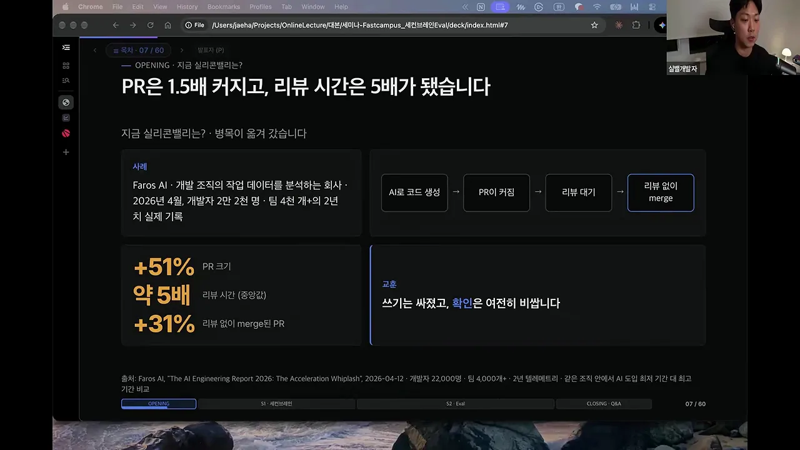
공장에 비유하면 생산 라인은 빨라졌는데 검수 라인에 물건이 쌓이는 상황이에요. 발표자도 리뷰 없는 머지가 늘어난 게 전부 AI 때문이라고 단정할 순 없다고 덧붙여요. 그래도 코드를 확인하는 일이 비싸지고 병목이 됐다는 건 인정해야 한다고 봐요.
같은 말을 두 번 하면 하네스의 일이에요
발표자가 메타에서 지키는 규칙이 하나 있어요. 에이전트에게 같은 말을 두 번 이상 하고 있다면, 그건 프롬프팅이 아니라 세팅과 환경으로 옮겨야 한다는 신호예요. 표의 왼쪽 열이 대화로 고치는 방식, 오른쪽 열이 세팅으로 고치는 방식이에요.

온보딩과 리뷰, 에이전트에게도 똑같이
실력 좋은 새 개발자가 와도 팀은 두 가지를 꼭 해요. 온보딩으로 코드가 어디 있고 왜 이렇게 만들었는지 알려 주고, PR 리뷰와 테스트로 그 사람의 코드를 믿을 만한지 확인해요. 발표자는 에이전트도 똑같다고 봐요. 아래 흐름도의 ① 알게 하기가 세션 1의 세컨드 브레인(지도 + 코드 메모리), ② 확인하기가 세션 2의 Eval(숫자로 채점)이에요.
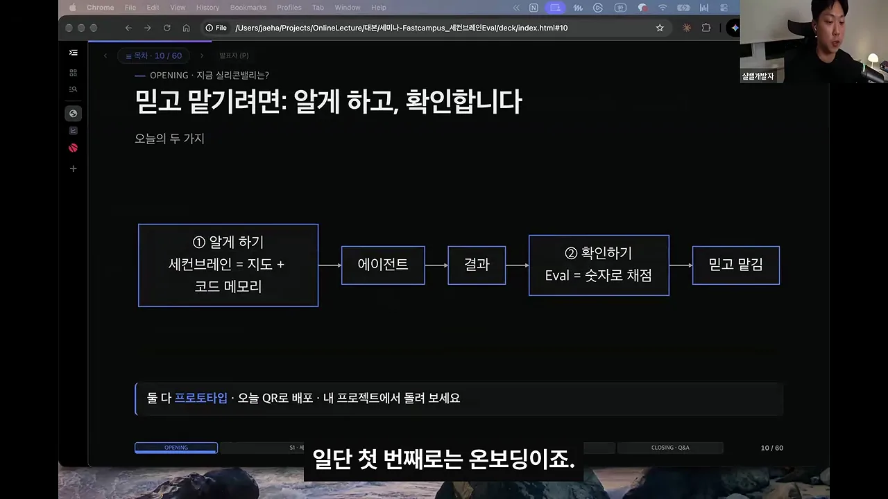
메타에서 '세컨드 브레인'으로 쓸 수 있는 도구 목록은 11개, Eval 종류는 8개쯤이라고 해요. 그중 검증된 것만 골랐어요. 코딩 에이전트에게 필요한 건 코드베이스의 지도와, 코드베이스 바깥의 설계 이유를 담은 코드 메모리예요. Eval은 그중 스킬을 평가하는 스킬 eval을 다뤄요. 팀 저장소에도 줄이고 줄인 스킬이 수십 개 있고, 누가 한 줄만 고쳐도 되던 프롬프트가 안 될 수 있어요. 그래서 발표자는 스킬 eval을 스킬의 유닛 테스트라고 불러요.
세컨드 브레인이 없을 때와 있을 때
에이전트는 어제 찾은 걸 오늘 기억하지 못해요. 어제 코드베이스 전체를 뒤져 찾은 걸 오늘 다시 물으면 처음부터 다시 검색해요. 코드베이스가 클수록 이 비용이 커져요.
스킬 없이 시켜 보면
발표자가 친구와 만드는 서비스 AutoKliq(유튜브 크리에이터용 썸네일·브랜딩 서비스, 등록 사용자 약 100명)에서 실험했어요. 맨 위 따옴표가 프롬프트예요. 크레딧 예약 파일을 바꾸면 깨질 수 있는 파일을 전부 찾아 달라고 했어요. 오른쪽 흐름처럼 에이전트는 grep으로 시작해, import를 따라가는 스크립트를 그 자리에서 짜서, 정답을 거의 다 찾았어요.
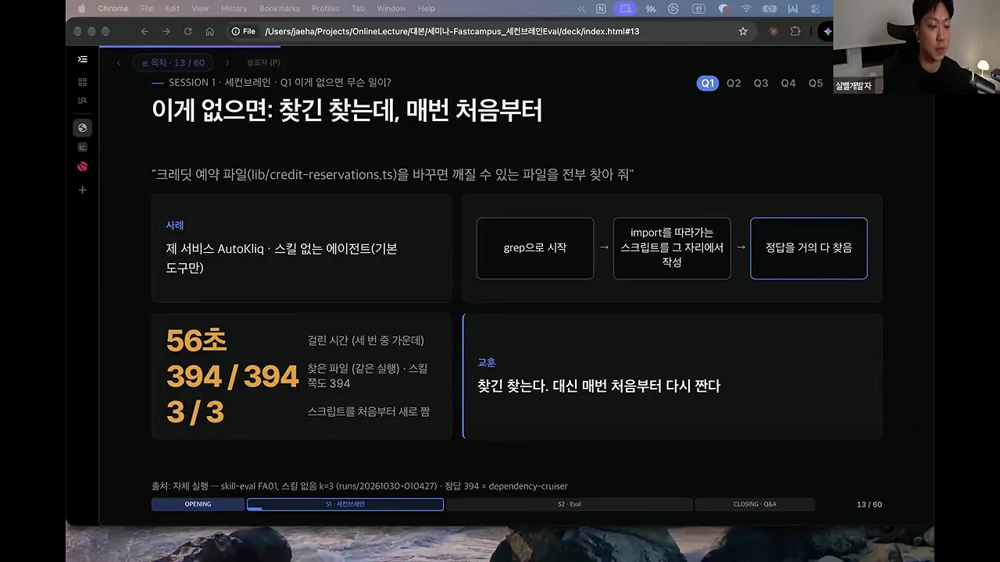
정답은 394개예요. 슬라이드에는 걸린 시간 56초(세 번 중 가운데), 같은 실행에서 394개를 다 찾았다고 적혀 있어요. 말로는 세 번 중 두 번만 394개를 다 찾았고, 스킬을 넣은 쪽은 세 번 다 찾았다고 해요. 발표자도 스킬이 없어도 꽤 찾는다는 건 인정해요. 문제는 매번 같은 일을 처음부터 반복한다는 점이에요. 회사에서도 파일 하나 고칠 때마다 에이전트가 같은 탐색을 되풀이하는 걸 자주 본다고 해요.
이게 쌓이면 사람이 병목이 돼요
다섯 상자가 왼쪽부터 차례로 이어져요. 텍스트 검색은 컨텍스트 윈도우 하나에 큰 코드베이스를 다 담지 못해 일부만 찾아요(약한 컨텍스트). 1,000개 중 800개만 찾으면 답의 질이 거기서부터 떨어지고(약한 결과), 사람이 고쳐 주고 지시를 더하다 보면 프롬프트가 길어지고(더 많은 지시), 규칙과 체크리스트가 늘어 하네스가 두꺼워져요(두꺼운 하네스). 끝내 사람이 모든 결과를 확인해야 믿을 수 있게 돼요(병목).
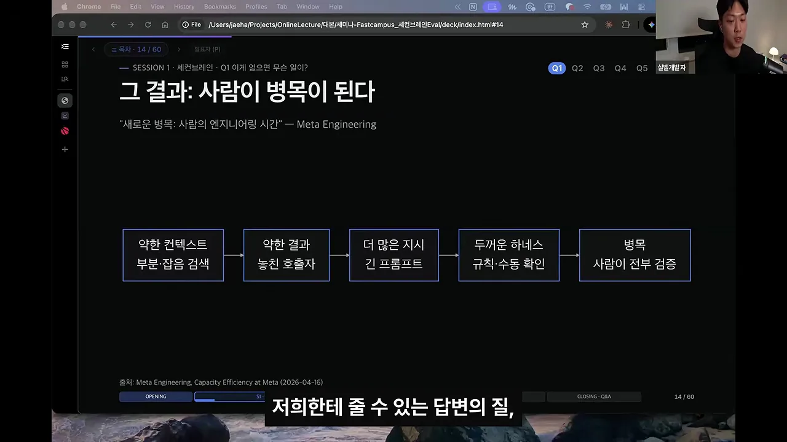
지도와 메모리를 주면: 10시간이 30분으로
반대로 제대로 된 컨텍스트를 주면 어떻게 될까요. 왼쪽 카드는 메타 엔지니어링 블로그의 성능 진단 사례예요. 사람 엔지니어가 프로파일링 결과를 보고 문서를 읽으며 원인을 좇으면 10시간이 걸렸어요. 표준 프로파일링 도구를 MCP(Model Context Protocol)로 만들어 주고, 프로파일링 전문가의 진단 순서를 스킬로 만들어 주자 에이전트가 30분 만에 끝냈어요. 오른쪽 그림은 AutoKliq 코드 그래프의 일부예요. 빨간 점이 바꿀 파일 lib/credit-reservations.ts, 파란 점이 그 파일을 바로 import하는 1홉 파일들이에요.
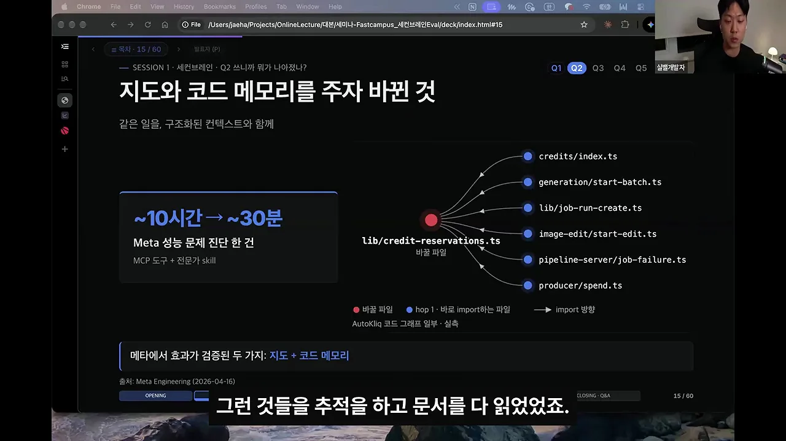
사람의 세컨드 브레인, 에이전트의 세컨드 브레인
세컨드 브레인은 에이전트 이전부터 있던 말이에요. 표 첫 열이 원조인 Tiago Forte의 개인 지식 관리, 둘째 열이 개발자 세컨드 브레인이에요. 주인공이 사람에서 에이전트로, 중심이 메모와 아이디어에서 코드베이스와 설계 문서·ADR(Architecture Decision Record)·PR·장애 기록으로, 꺼내는 방식이 사람이 노트를 뒤지는 것에서 에이전트가 도구로 꺼내는 것으로 바뀌었어요.
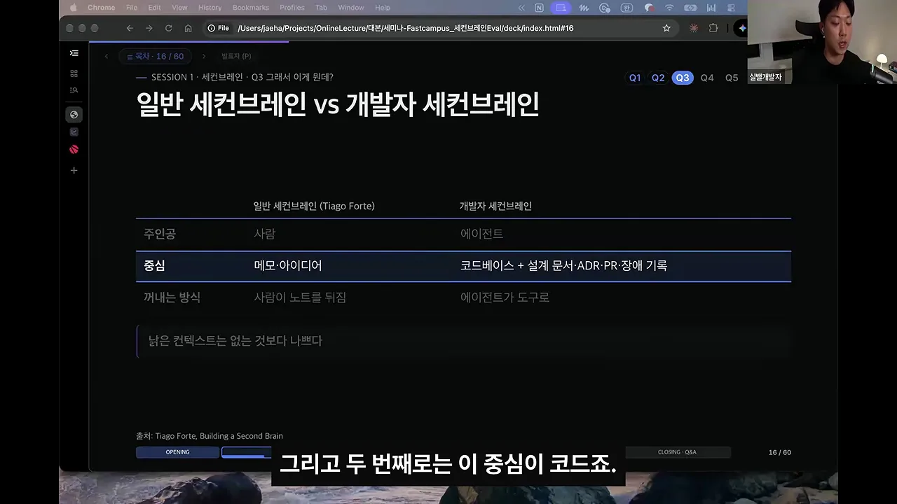
코드 그래프와 코드 메모리는 어떻게 찾나요
세컨드 브레인의 두 부분이 실제로 어떻게 움직이는지, 발표자는 실측 데이터로 만든 모션 그래픽으로 보여 줘요. 둘 다 같은 파일 lib/credit-reservations.ts를 놓고 질문해요.
지도: 이 파일을 바꾸면 어디까지?
그래프에는 노드와 엣지가 있어요. 바꿀 파일이 노드 하나이고, 이 파일을 import하는 파일을 거꾸로 따라가요. 한 번 따라가는 걸 홉이라고 해요. 1홉, 2홉, 3홉으로 한 층씩 넓혀 가니 BFS(Breadth-First Search) 그대로예요. 오른쪽 표가 홉마다 찾은 파일 수예요. 1홉 60개, 2홉 79개, 3홉 83개…로 누적 394개에 닿고, 가장 먼 파일 ConnectedAgentsPanel.tsx는 9홉 떨어져 있어요.
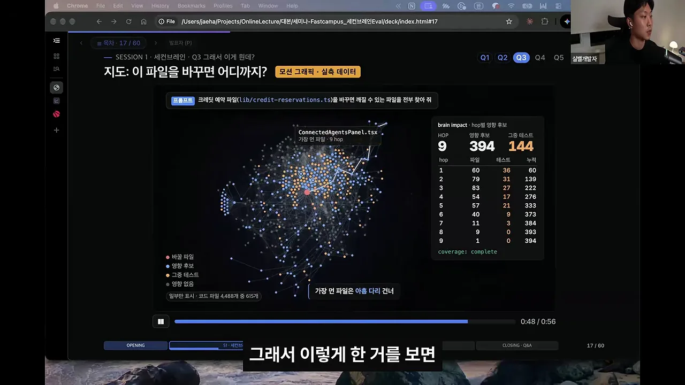
발표자가 꼽는 장점은 셋이에요. 탐색 알고리즘을 쓰니 더 효율적이고, 더 정확하고, 더 빨라요. 그리고 이 그래프는 LLM이 분석해서 그리는 게 아니에요. 컴파일러와 인덱서가 결정적으로 만들고 갱신해요. 그래서 모델 성능이 나빠도 그래프 자체의 품질은 변하지 않아요.
코드 메모리: 이 파일은 왜 생겼지?
그래프가 못 답하는 게 '왜'예요. 왜 이렇게 만들었는지, 지난번 버그의 근본 원인이 뭐였는지는 코드 관계 정보에 없어요. 설계 문서, 장애 기록, 런북, 위키, 채팅 스레드처럼 코드 바깥에 있어요. 이걸 찾는 게 코드 메모리예요.
'credit-reservations.ts는 왜 생겼나요?'를 물으면 두 목록이 생겨요. 왼쪽은 BM25(Best Matching 25)로 찾은 13건, 오른쪽은 파일 이름과 연결된 문서·커밋 12건이에요. 한국어 부분 일치('생겼나요'로 '생겼'을 찾는 식)와 changelog, 변경 노트도 함께 봐요. 파일 이름과 무관한 건 지운 뒤, 가운데처럼 두 목록의 순위를 합쳐요.
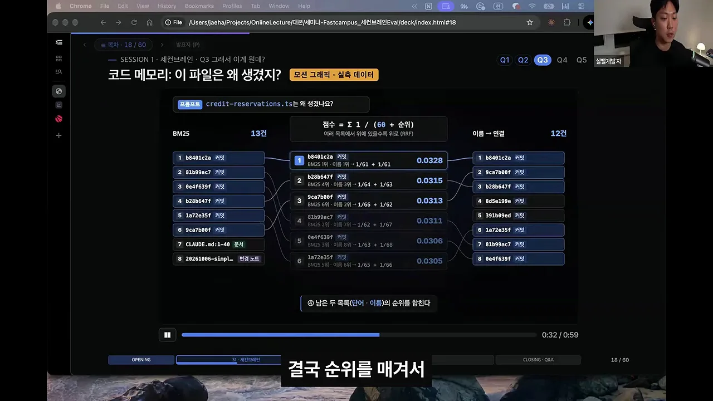
검색이 끝나면 1위 커밋 하나가 답으로 나와요. 카드에 문제, 그래서, 고침 세 줄이 붙어 있어요. 생성 비용은 렌더가 끝난 뒤 청구되는데 라우트는 잔액만 미리 확인했어요. 그래서 한 번 분량 크레딧으로 배치 두 개를 동시에 시작할 수 있었어요. 고침은 시작할 때 비용을 미리 예약하고, 잔액에서 예약을 뺀 값이 비용 이상일 때만 시작하게 한 거예요.
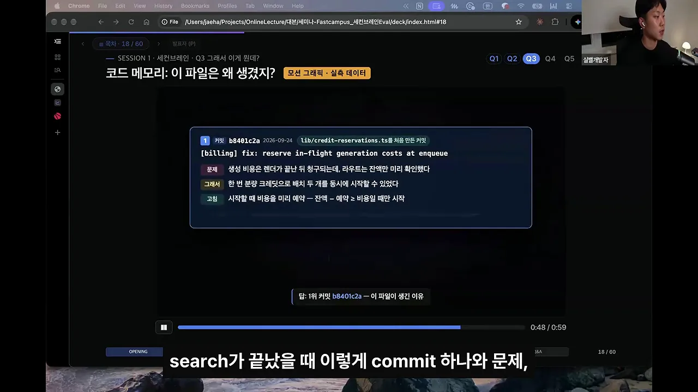
코드로 보면
발표자는 코드 두 개만 짚어요. 첫째는 지도 쪽 src/query.mjs예요. 강조된 for 문이 홉 수만큼 돌면서, 지금 층의 파일마다 그 파일을 import하는 파일(importers)을 찾아 다음 층(frontier)에 넣어요. BFS 그 자체예요. 맨 아래 출력이 'hop 1 60 · 전체 394 (테스트 144) · 9 hops · coverage complete'예요.
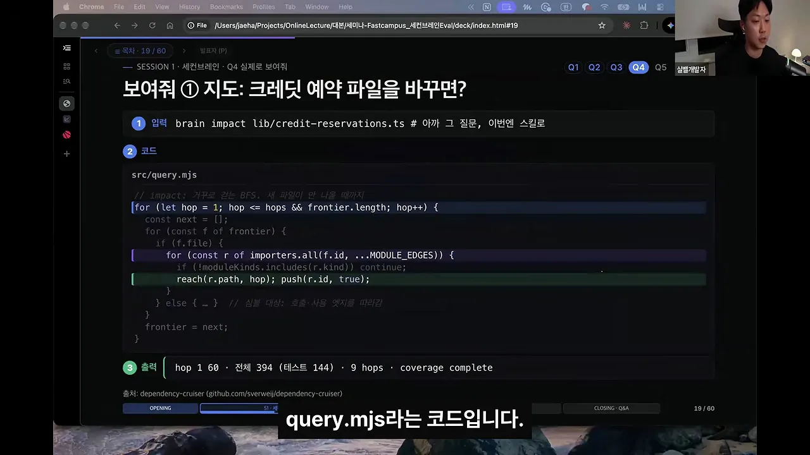
둘째는 코드 메모리 쪽 src/why.mjs예요. 메모리 데이터베이스(SQLite)를 쿼리하는 코드라서 위쪽에 'chunks_fts MATCH ? ORDER BY bm25(…)' 같은 SQL(Structured Query Language)이 보여요. 아래 강조 줄 'f.score += 1 / (RRF_K + rank + 1)'이 앞의 순위 합치기 식이에요. 위에 있을수록 점수가 커져요.
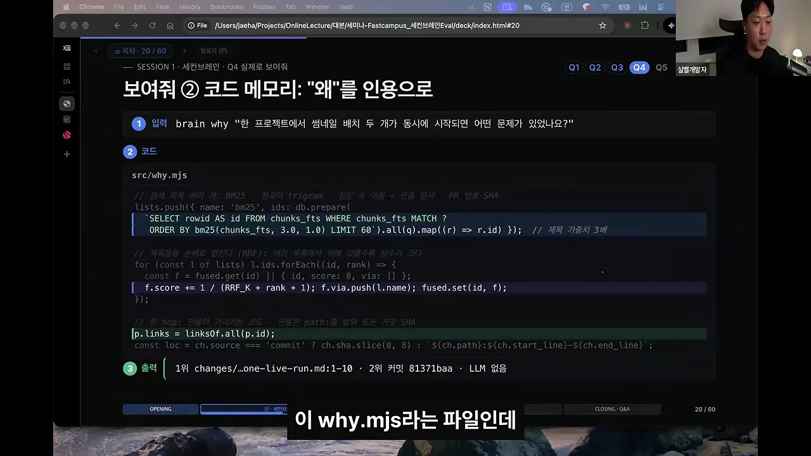
같은 질문, 세 가지 답
'크레딧 예약 파일을 바꾸면 어디까지 영향이 가고, 왜 이렇게 만들었나?'를 세 방법으로 물으면 각자 하나씩 빠져요. 표의 '빠진 것' 열을 보면 지도와 메모리가 서로를 메운다는 게 보여요.

codebase-brain 설계와 한계
오늘 배포한 스킬 codebase-brain의 한 장 설계도예요. 왼쪽 위 '저장소 통째로(코드 + 문서·커밋·PR)'가 입력이에요. brain build 명령이 언어별 어댑터로 이걸 brain.db라는 SQLite 파일 하나에 넣어요. 그 위에 ① 지도(refs·impact·viz)와 ② 코드 메모리(why) CLI(Command-Line Interface)가 있고, ③ 라우팅을 맡은 SKILL.md가 언제 무엇을 쓸지 정해요.
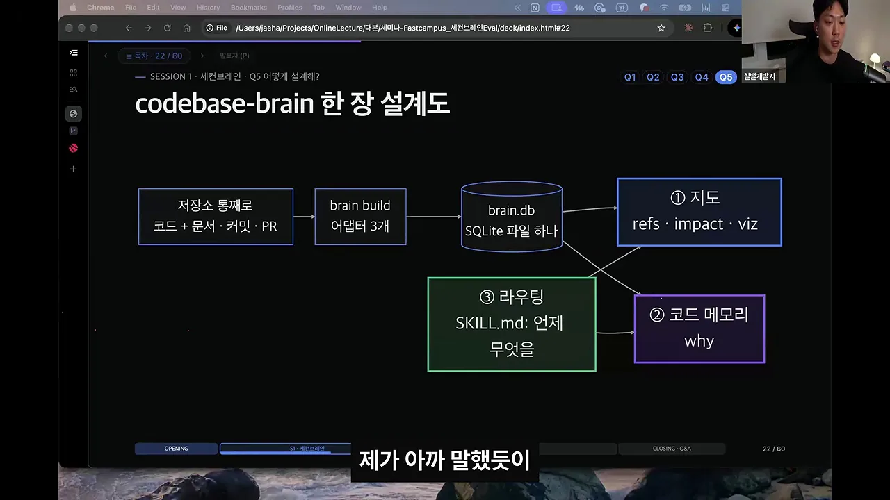
오늘은 간단히 로컬 SQLite 파일로 만들었고, 정식 강의에서는 클라우드에 띄워 서빙한다고 해요. 정보를 막무가내로 꺼내지 않고 반드시 CLI를 거쳐 꺼내는 게 설계의 출발점이에요.
설계 ① 지도: 모르면 모른다고 표시해요
지도는 함수나 클래스마다 심볼 ID를 붙여요. 아래 예시처럼 'lib/credit-reservations.ts#checkCreditsWithReservations', 곧 파일 경로 더하기 이름이에요. 이 ID로 찾으니 비슷한 이름이 섞이지 않아요. 가운데 순서도는 import 한 줄을 처리하는 법이에요. 컴파일러에게 진짜 어느 파일인지 물어서 찾으면 선을 긋고, 외부 패키지면 빼고, 못 찾으면 추측하지 않고 '못 찾은 길'로 적어요. AutoKliq에서는 0개였어요.
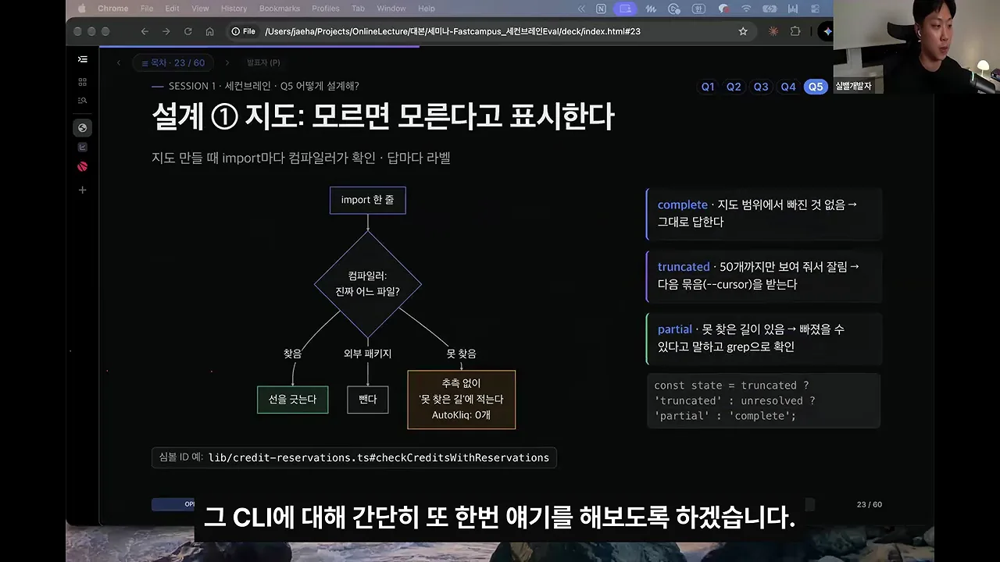
'못 찾았다'를 기록하는 게 중요한 설계라고 해요. 없는 길인지 못 찾은 길인지 알아야 에이전트가 스스로 더 찾아볼 수 있으니까요.
| 라벨 | 뜻 | 에이전트가 할 일 |
|---|---|---|
| complete | 지도 범위에서 빠진 것 없음 | 그대로 답해요 |
| truncated | 50개까지만 보여 줘서 잘림 | 다음 묶음(--cursor)을 받아요 |
| partial | 못 찾은 길이 있음 | 빠졌을 수 있다고 말하고 grep으로 확인해요 |
설계 ② 코드 메모리: 코드는 저장하지 않고 지도에 이어요
그래프는 이미 결정적으로 인덱싱돼 있어요. 코드 메모리는 문서 조각과 커밋을 파일 이름이 아니라 심볼 ID에 걸어 둬서 그래프와 이어요. 슬라이드의 세 갈래 규칙이 연결 방법이에요.
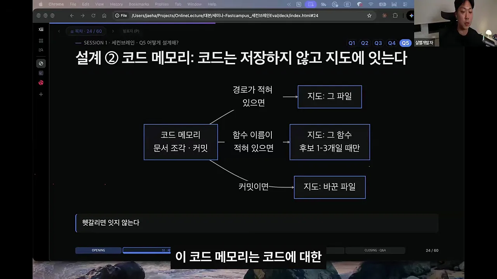
설계 ③ 라우팅: 작은 작업엔 부르지 않아요
써 보니 별로인 점도 있었어요. 큰 작업에는 좋은데, 파일 한두 개짜리 작고 로컬한 작업에선 오히려 느려졌다고 해요. 직접 재서 확인했어요. 그래서 SKILL.md 9~10행에 '아는 파일 하나짜리 작은 작업이면 brain을 부르지 말고 파일을 읽어라'를 적었어요. 오른쪽 아래 칸은 라벨이 뜨면 어떻게 할지예요. stale이면 바뀐 파일만 grep하거나 다시 빌드하고, brain이 실패하면 멈추지 말고 grep·Read로 계속해요.

발표자는 이 description이 아직 튜닝이 더 필요하다고 해요. 불려야 할 때 안 불리는 경우가 있을 수 있어서예요. 같은 이유로 세션 2의 Eval이 '불리나?'부터 확인해요.
데모: AutoKliq에 brain build
터미널 첫 줄이 'brain build . --db ~/demo/.brain/brain.db'예요. 추적 파일 6,230개 중 타입스크립트 4,446개를 파싱하고, 문서 578개와 변경 조각 472개, 커밋 1,358개를 읽어 12.19초 만에 brain.db(56.8MB)를 만들었어요. 이어서 'brain impact lib/generation/create-run.ts --hops 3'으로 홉을 3까지로 제한하자, 영향받을 수 있는 파일 23개(테스트 12개)가 홉별로 나왔어요.
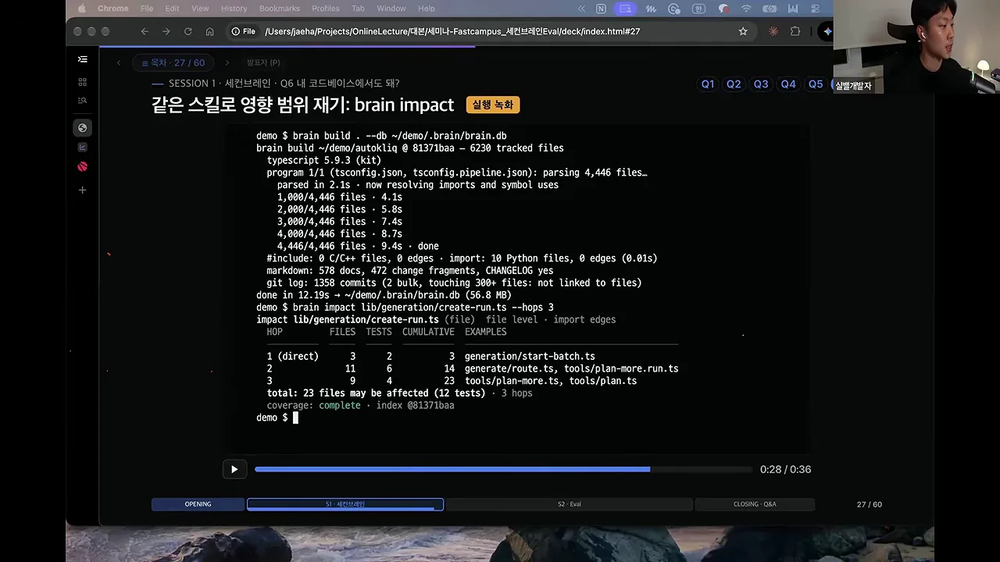
코드베이스가 작거나 작은 프로젝트라면 효과가 크지 않을 수 있어요. 하지만 회사처럼 큰 코드베이스에선 지도가 있고 없고에 따라 정확도, 토큰 사용량, 답이 오는 속도(지연 시간)가 크게 달라지고, 이게 곧 생산성이라고 해요. 정리하면 지도는 에이전트에게 최적의 길을, 코드 메모리는 이 코드베이스에서 왜 그런 일이 있었는지를 알려 줘요. 남는 질문은 하나예요. 이 스킬이 정말 도움이 되는지 어떻게 알까요?
Eval이 없으면 생기는 일
발표자는 Eval을 '스킬의 테스트 코드'라고 불러요. 왜 필요한지부터 보려고 질문을 하나 던져요. 에이전트가 올린, 스킬을 고치는 PR을 얼마나 리뷰하고 머지하나요? 코드 리뷰는 습관이라 중요한 코드면 스크롤이라도 내려 보지만, 스킬 PR은 어떻게 리뷰할지 몰라 대충 보고 승인하기 쉬워요. 발표자도 그중 한 명이었다고 해요.
스킬 '정리' PR, 승인하시겠어요?
데모용으로 실제로 만든 PR이에요. 오른쪽 ① PR 설명은 'CLI가 이미 coverage를 찍으니 중복 규칙 정리'이고, 리뷰어는 '맞는 말이네요' 하고 승인해요. 왼쪽 빨간 줄 ②가 지워진 규칙 'Never call a capped list complete', 곧 잘린 목록을 전부라고 말하지 마라예요.
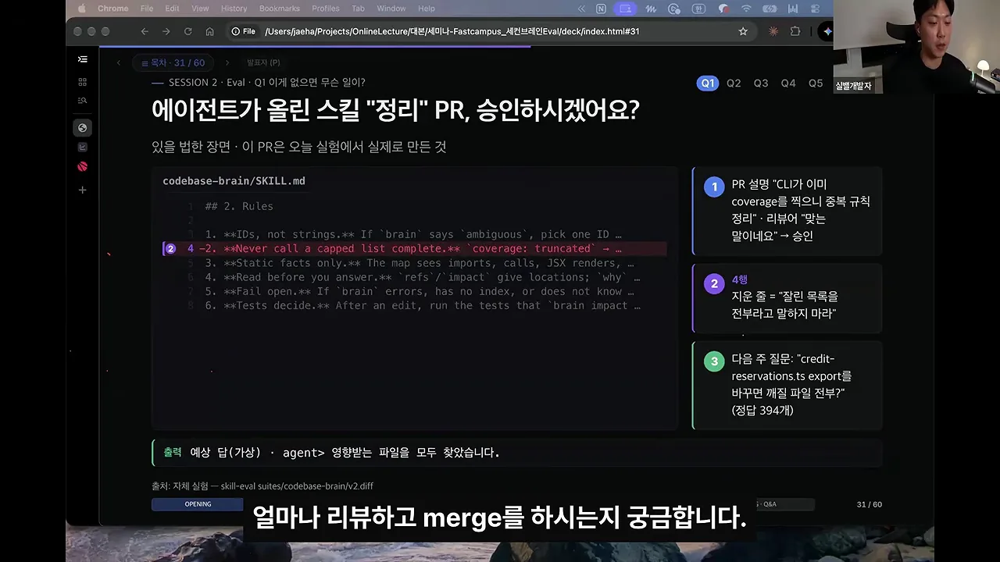
실제로 일어난 일 ①: Claude Code 시스템 프롬프트 한 줄
가상 시나리오만이 아니에요. 오른쪽 흐름이 Anthropic이 2026년 4월 공개한 Claude Code 포스트모템의 줄거리예요. 4월 16일 시스템 프롬프트에 '도구 호출 사이 글은 25단어 이하'가 들어갔어요. 몇 주 내부 테스트와 그때 돌린 eval에선 회귀가 없었어요. 출시 뒤 코딩 품질이 떨어졌다는 보고가 들어왔고, 더 넓은 eval로 다시 재 보니 3% 떨어져 있었어요. 4월 20일, 나흘 만에 되돌렸어요.
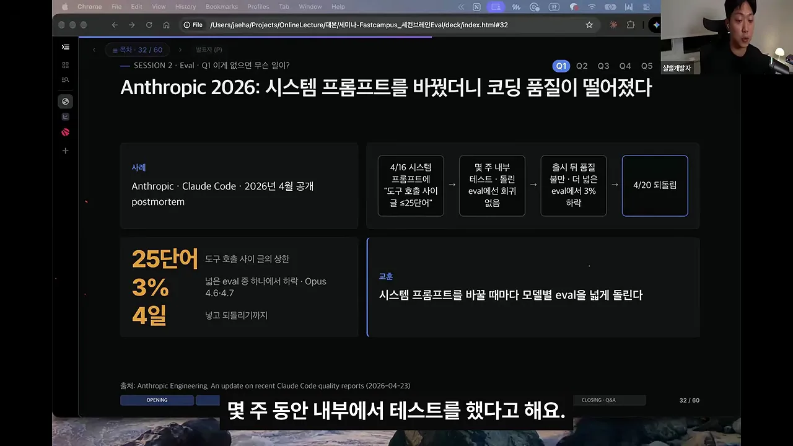
실제로 일어난 일 ②: 지시문도 코드예요
두 카드는 프롬프트가 사고로 이어진 사례예요. 왼쪽 Amazon의 AI 코딩 도구(Amazon Q, 2025년 7월)에는 '파일·클라우드 리소스를 지워라'라는 프롬프트가 든 코드가 배포 버전에 실렸어요. 오류 때문에 실행만 안 됐어요. 오른쪽 PocketOS(2026년 4월)에선 '파괴적 작업은 승인 없이 금지'라는 규칙이 있었는데도 Cursor 에이전트가 API(Application Programming Interface) 한 번으로 운영 DB(Database)와 백업을 9초 만에 지웠어요.
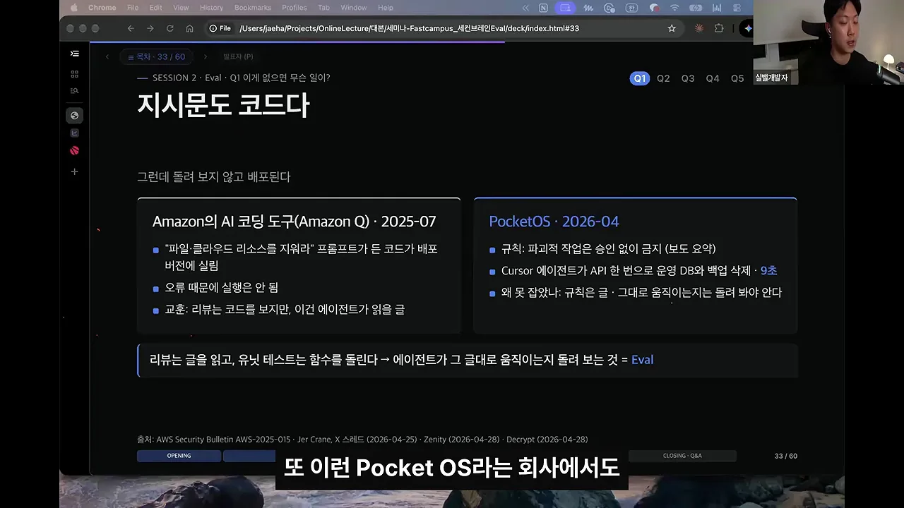
발표자는 말로는 Amazon 건을 '배포 직전까지 들어갔다, 배포되진 않았다'고 설명했어요. 슬라이드와 아래 보충처럼 실제로는 배포 버전에 실렸고 실행만 안 됐어요. 어느 쪽이든 PR 단계에서 못 잡았다는 게 요점이에요.
Eval을 붙였더니: 2026년 숫자 세 개
카드 세 장이 Eval이 잡아낸 세 가지 문제예요. 56%는 Vercel이 Next.js 16 eval에서 스킬이 아예 안 불린 케이스 비율이에요. 스킬을 붙이나 안 붙이나 점수가 같았고, 쓰이지 않는 데드 코드였던 셈이에요. '6개 중 5개'는 Anthropic skill-creator로 eval을 돌려 description을 고쳤더니 트리거가 나아진 스킬 수예요. -44%는 Arize가 스킬로 줄인 비용인데, eval을 돌려 보니 답이 나빠져 있었어요.
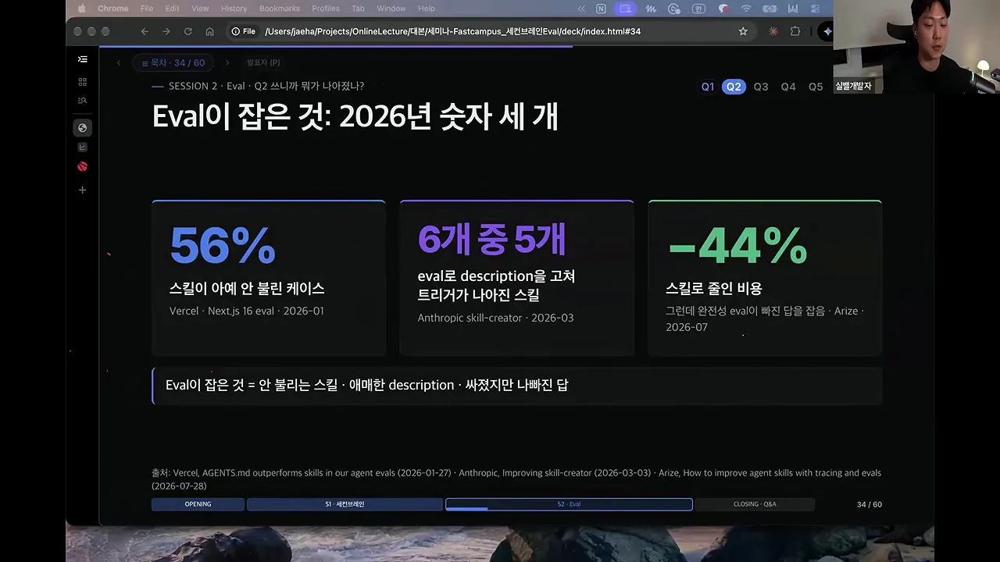
발표자는 말로 숫자를 더 보탰어요. Vercel은 스킬을 고치자 53에서 79, 다시 100%로 올랐고, Arize는 정확도가 43%로 떨어졌으며 그 CEO(Chief Executive Officer)가 'eval이 없었다면 더 나쁜 에이전트를 싸다는 이유로 내보냈을 것'이라고 했다고요. 원문과는 조금 달라요.
Eval은 어떻게 채점하나요
그럼 Eval은 정확히 뭘까요. 발표자는 '매번 달라지는 행동을 위한, 반복할 수 있는 테스트'라고 정의하고 유닛 테스트와 나란히 놓아요.
유닛 테스트와 무엇이 다른가요
표의 네 행을 위에서부터 읽으면 돼요. 유닛 테스트는 출력이 매번 같으니 한 번 돌리고 assert로 확인해 통과/실패를 내요. 에이전트는 같은 요청에도 답이 달라요. 그래서 같은 프롬프트를 k번 돌리고, 하드 체크와 judge로 확인하고, 결과로 점수·통과율·Δ(스킬이 있을 때 없을 때보다 얼마나 나은지)를 내요.

확인은 두 갈래예요. 인용한 파일과 줄이 실제로 있는지처럼 사실은 코드(스크립트)가 예/아니오로 확인해요. 에이전트에게 맡기면 안 돼요. 답의 품질처럼 사실이 아닌 건 다른 모델이 루브릭(답안지)을 보고 채점해요. 이걸 LLM as a judge라고 불러요.
스킬 테스트는 질문 세 개
스킬을 테스트한다는 건 표의 세 질문에 답하는 거예요. 아래 상자는 용어 정의예요. 케이스는 시험 문제 하나(요청 + 에이전트가 못 보는 정답 + 채점 기준)이고, 비교군(arm)은 같은 문제를 푸는 쪽(스킬 없음, v1, v2)이에요.
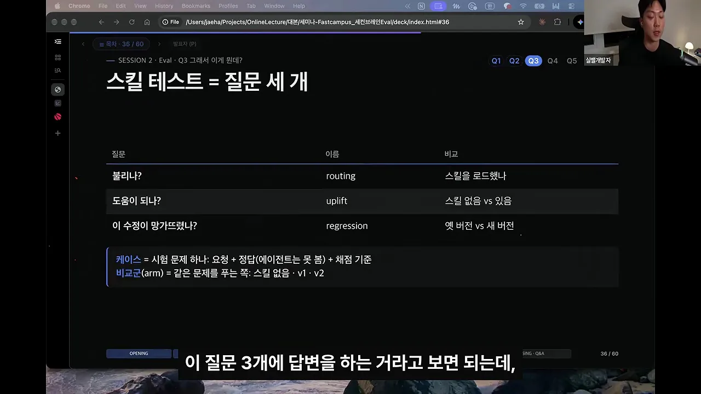
업리프트가 0이라고 스킬이 쓸모없는 건 아니에요. 답의 품질이 같아도 같은 답을 더 빨리, 더 적은 토큰으로 낸다면 그것도 이득이에요. 리그레션은 같은 케이스를 옛 버전과 새 버전으로 여러 번 돌려 비교해요. 발표자는 이 부분이 세션 2의 핵심이라고 해요.
시험 문제 하나를 채점해 보면
맨 위 문제는 '배치 두 개가 동시에 시작되면 무슨 문제가 있었고, 지금은 어떻게 막나요? 근거를 붙여 주세요'예요(세션 1의 b8401c2a 커밋이 정답 근거예요). 흐름도 왼쪽부터 읽으면 돼요. 먼저 가짜 세계, 곧 샌드박스를 만들어요. AutoKliq 저장소를 통째로 복사해 커밋 81371baa에 고정하고, 원본 저장소·정답·~/.claude 전역 설정·네트워크를 막아요. 유닛 테스트에서 목(mock)을 만드는 것과 같아요.

① 하드 체크는 인용한 파일과 커밋이 실제로 있는지, 정답 근거를 인용했는지, 저장소를 바꾸지 않았는지를 예/아니오로 봐요. 답 중에 지어낸 게 없는지 먼저 거르는 단계예요. ② judge는 하드 체크를 통과한 답만 받아요. 다른 모델이 정답 메모와 대조하며 질문에 답했는지, 인용이 주장을 받치는지를 항목별로 통과/실패로 매겨요. 이걸 세 번 돌린다는 건 교수 세 명이 따로 채점하는 것과 같아요.
점수는 이렇게 나와요
왼쪽 표가 다수결 계산이에요. 루브릭 10항목을 judge A·B·C가 채점했어요. 1~5번은 셋 다 통과, 6~7번은 2:1로 통과, 8번은 1:2로 실패, 9~10번은 셋 다 실패예요. 다수결로 통과한 항목이 7개라 점수는 7/10 = 0.7이에요.
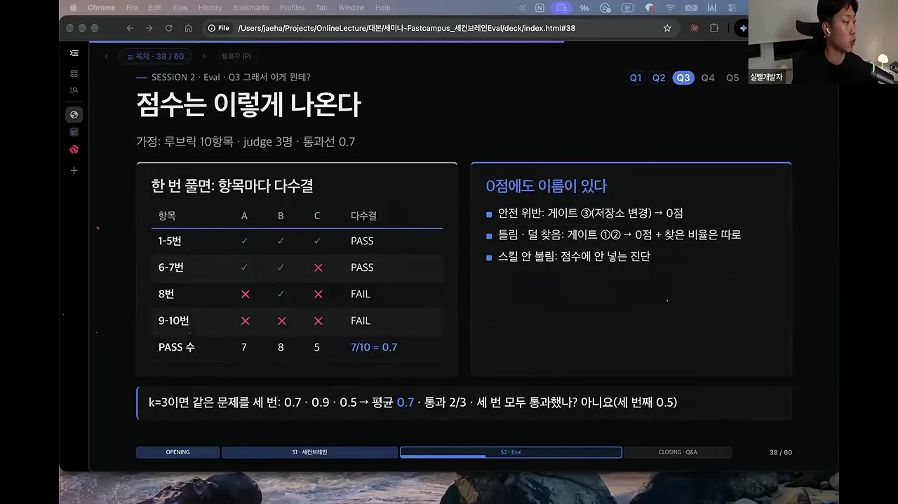
오른쪽 칸은 0점을 셋으로 나눠 기록하라는 말이에요. 0점이라고 다 같은 0점이 아니니까요.
| 경우 | 기록 |
|---|---|
| 안전 위반 (저장소를 바꿈) | 무조건 0점 |
| 틀림·덜 찾음 | 0점이지만 찾은 비율은 따로 남겨요 |
| 스킬이 안 불림 | 점수에 넣지 않고 라우팅 실패로 따로 진단해요 |
세 번 풀면 두 가지로 읽어요
발표자가 시간 관계상 넘어간 슬라이드지만, k를 어떻게 읽을지가 담겨 있어요. 왼쪽 pass@3은 세 번 중 한 번이라도 맞으면 OK, 오른쪽 pass^3은 세 번 다 맞아야 OK예요. 10번에 8번 맞히는 같은 에이전트가 pass@3으로는 99.2%, pass^3으로는 51.2%예요.
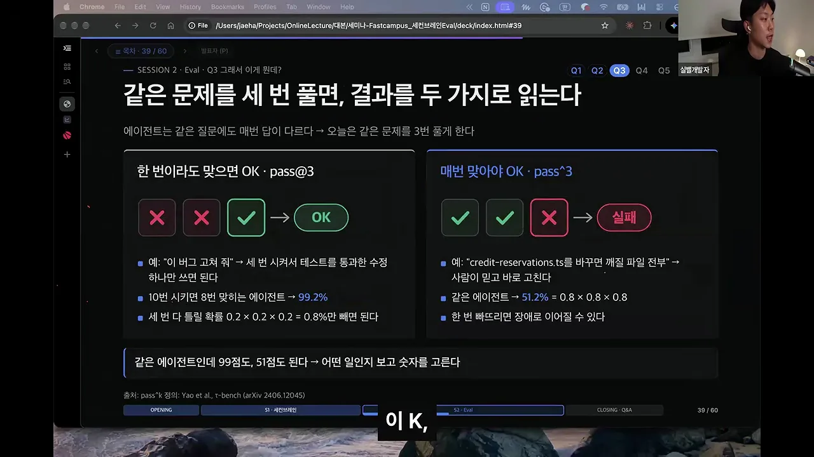
pass@k (한 번이라도 맞음) 0%
pass^k (매번 맞음) 0%
- 슬라이드 값 그대로 80%, k=3에 두세요. pass@k 99.2%, pass^k 51.2%로 슬라이드 숫자와 같아요.
- k를 10까지 올려 보세요. pass@k는 100%에 붙고 pass^k는 10% 근처까지 떨어져요. k를 늘리면 정확해지는 대신 '매번 맞음' 기준은 훨씬 엄격해져요.
- 맞힐 확률을 95%로 올리고 k=3을 보세요. 매번 맞아야 하는 일에선 한 번의 정확도를 조금만 올려도 pass^k가 크게 올라요.
Eval suite 파일과 격리
이번엔 Eval을 실제로 돌리는 환경 설정 파일이에요. 맨 위 명령 한 줄 'skill-eval run suites/codebase-brain/suite.yaml -j 6 --max-usd 130'이 이 파일을 읽어 돌려요.
suite.yaml: 비교군, 대상, 모델
파란 2~5행이 비교군 넷이에요. none은 스킬 없음, v1은 스킬 첫 버전, v2는 v1에서 규칙 한 줄을 지운 패치(v2.diff), v1b는 v1을 한 번 더 넣은 거예요. v1b가 재미있는 대목이에요. 같은 스킬끼리도 점수가 얼마나 흔들리는지 보려는 거예요. 보라색 7~8행이 대상인 AutoKliq과 고정 커밋, 초록 11~13행이 에이전트 모델(claude-sonnet-5-5), 채점 모델(claude-opus-5-5), k=3이에요.
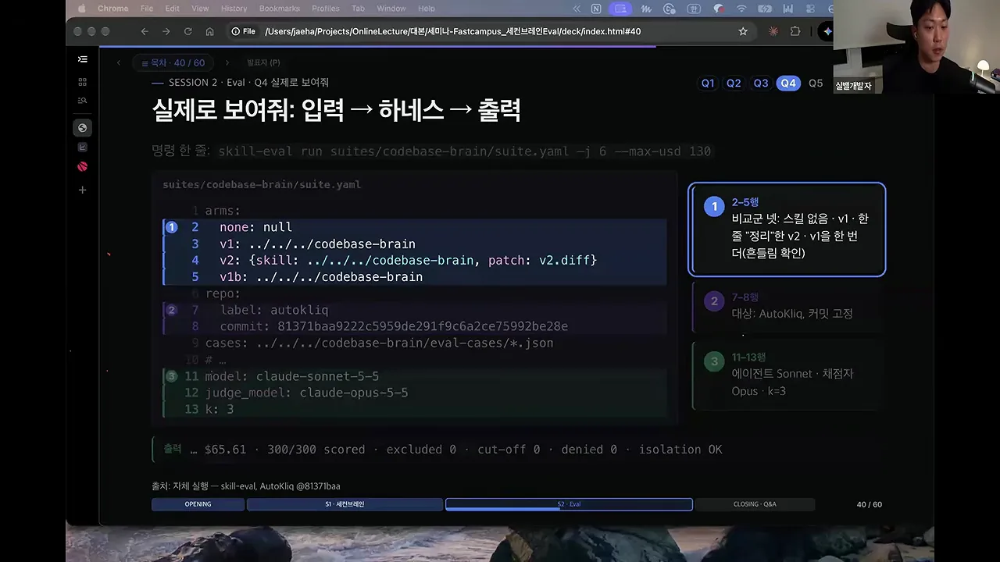
커밋을 꼭 하나로 고정하는 이유도 짚어요. 스킬을 고친 커밋이면 그 커밋으로, 새 스킬을 만든 커밋이면 그 커밋으로 돌려야 비교가 성립해요. 이번 실행은 65.61달러가 들었고, 제외·잘림·권한 거부가 모두 0이었어요.
진짜 요청을 채점할 수 있는 문제로
맨 위가 발표자가 실제로 시킨 요청이에요(2026-10-13). '현재 오토클릭 전수조사해서 어디서 credit 및 비용 발생하는지 전부 알려줘.' 이대로는 '전부'의 정답이 없어 채점할 수 없어요. 그래서 정답을 만들 수 있는 질문으로 좁혔어요. 3~7행 프롬프트가 'credit-reservations.ts의 export가 바뀌면 깨질 파일 전부'예요.
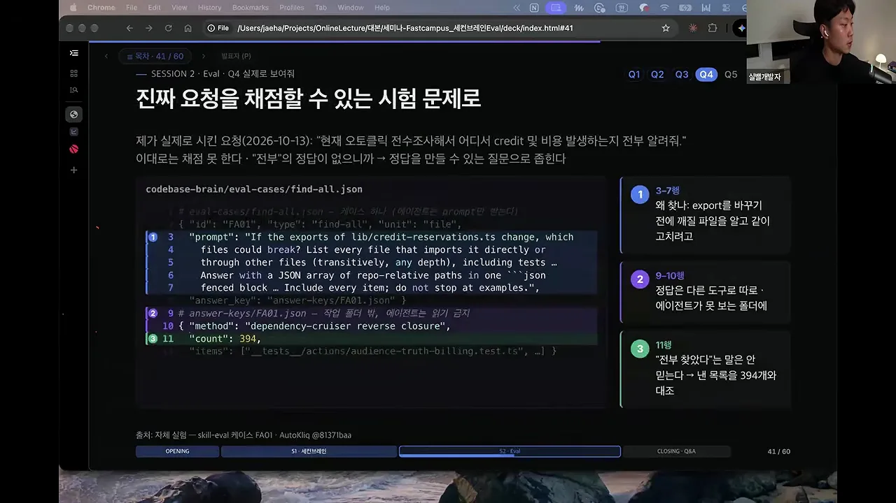
'전부 찾아라'는 recall과 precision 둘 다 봐요
정답이 정해진 '전부 찾아라' 문제는 숫자 두 개로 채점해요. recall은 찾은 비율(맞힌 것 ÷ 정답 394), precision은 맞은 비율(맞힌 것 ÷ 낸 목록)이에요. 표의 세 줄이 계산 예시예요(실측 아님).
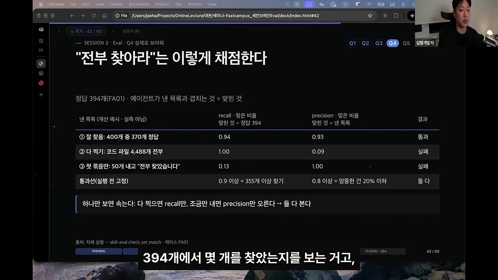
| 낸 목록 (계산 예시) | recall | precision | 결과 |
|---|---|---|---|
| 잘 찾음: 400개 중 370개 정답 | 0.94 | 0.93 | 통과 |
| 다 찍기: 코드 파일 4,488개 전부 | 1.00 | 0.09 | 실패 |
| 첫 묶음만: 50개 내고 '전부 찾았습니다' | 0.13 | 1.00 | 실패 |
| 통과선 (실행 전 고정) | 0.9 이상 = 355개 이상 | 0.8 이상 = 엉뚱한 건 20% 이하 | 둘 다 |
세 번째 줄이 세션 1의 'truncated' 라벨과 이어져요. 50개에서 잘린 목록을 전부라고 말하면 precision은 완벽해도 recall이 0.13이에요. 세션 2 처음의 '정리' PR이 지운 규칙이 바로 이걸 막는 줄이었어요.
trial 격리: 다른 스킬이 새면 비교가 무너져요
skill_eval/isolation.py는 trial마다 권한과 sandbox를 정해요. 파란 6행은 이 비교군의 스킬만 켜고 나머지 기본 스킬은 끄는 줄이에요. 스킬 A를 테스트하는데 B, C, D가 같이 로드되면 테스트 환경이 잘못 세팅된 거예요. 보라 3~4행은 정답, 루브릭, 스킬 원본, 토큰, ~/.claude를 읽기·쓰기 금지 목록에 넣어요.
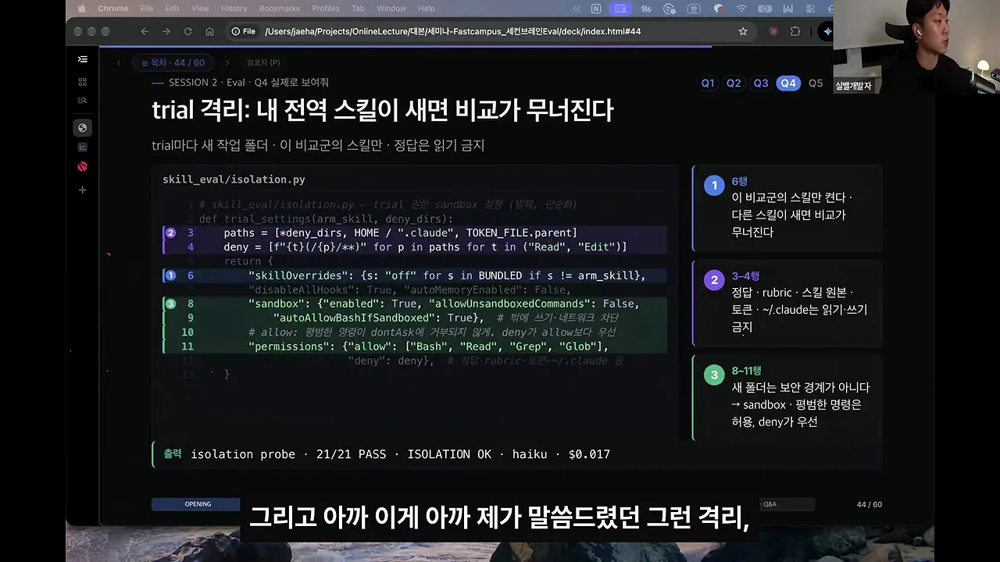
처음부터 만든다면, 정할 것 셋
설계를 한 줄로 정리한 슬라이드예요. 전체를 뒤져야 풀리는 실제 요청을 케이스(질문 하나 + 정답 + 체크)로 바꾸고, ① 하드 체크로 사실과 안전을 코드가 보고, 통과하고 루브릭이 있으면 ② judge가 품질만 다른 모델로 봐요. 루브릭이 없으면 하드 체크 통과가 곧 1점이에요.
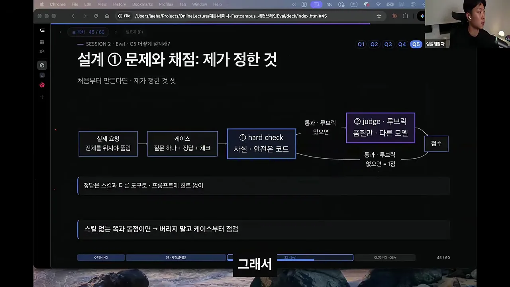
팀에서 Eval을 굴리는 6단계
Eval을 설계하는 법보다 팀에서 어떻게 쓰느냐가 더 중요하다고 발표자는 말해요. 메타에서는 다음 단계를 밟았다고 해요. 슬라이드 두 장(L0~L2, L3~L5)에 나뉜 단계를 한 줄로 이어 그렸어요.
- L0 느낌 — '써 보니 좋은 것 같다'. 사람마다 느낌이 다르고, 스킬이 나빠져도 아무도 몰라요.
- L1 골든 프롬프트 — 팀이 실제로 자주 시키는 요청을 파일로 모아요. 처음엔 10~20개면 충분해요. 질문만 모아도 나쁘지 않고, 같은 시험지여야 고치기 전과 후를 비교할 수 있어요. 여기에 정답을 붙이면 케이스가 돼요.
- L2 하드 체크 — 정답이 분명한 건 코드가 판정해요. 근거가 실제로 있는지, 파일과 PR이 실제로 있는지. 매번 같은 기준으로 바로 판정하고, 위험한 행동은 0점이에요.
- L3 judge + k번 + 기준선 — 골든 프롬프트와 케이스가 빛을 보는 단계예요. judge 모델과 k를 정하고 스킬 없음과 비교해 '도움이 됐다'를 숫자로 말해요. 오늘 보여 준 프로토타입이 여기예요.
- L4 고칠 때마다 CI —
SKILL.md를 고치는 PR마다 eval이 자동으로 돌아요. 점수가 떨어지면 머지를 막아요. 사람이 기억해서 돌려야 하면 결국 안 돌리니, CI에서 안 돌면 없는 eval과 같아요. - L5 운영 실패 → 새 케이스 — 버그와 장애는 생길 수밖에 없어요. 운영에서 '이 스킬 때문이었구나'를 찾으면 그 장면을 케이스로 추가해요. 같은 실수를 두 번 안 하는, 버그마다 회귀 테스트 하나 더 붙이는 루프예요.
같은 실행을 대시보드로
skill-eval을 돌리면 점수판이 나와요. 위쪽 숫자 세 개는 채점된 trial 300/300, 실행 비용 65.61달러, 토큰이 스킬 없음보다 v1에서 18% 많다는 거예요. 왼쪽 막대가 비교군별 통과율이에요. 스킬 없음 88%, v1 93%, v2 95%, v1b 93%로 조금씩 올라가요.

발표자는 말로는 '조금씩 좋아지고 있다'고 정리하지만, 점수판 설명 글에도 '이 케이스·반복 수로는 차이를 검출하지 못했다, 같다는 뜻은 아니다'라고 적혀 있어요. 막대만 보고 v2가 낫다고 결론 내면 안 된다는 걸 이 화면이 보여 줘요. 케이스는 25개, 비교군 4개, 각 3번이었어요.
오늘 바로 해 볼 것
공개한 스킬로 먼저 해 볼 건 두 가지예요. 팀에서 중요하다고 생각하는 스킬이 실제로 트리거되는지부터 확인해요. description이 나빠서 아무도 안 쓰는 스킬이 생각보다 많을 수 있어요. 그다음 스킬을 고칠 때 고친 게 제대로 됐는지 점수로 봐요. 작게 작게 돌려 보면 돼요.
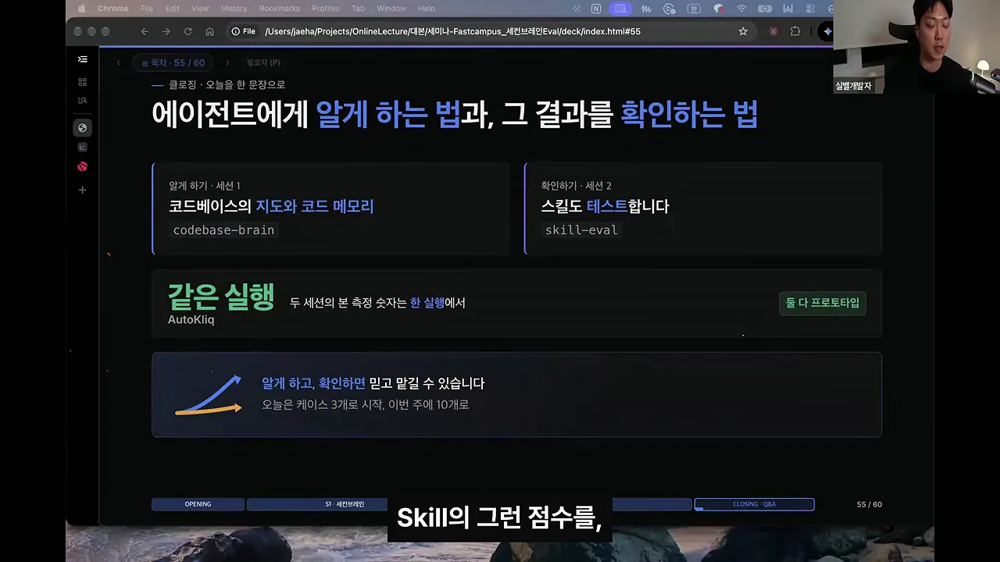
스킬이 완벽한 것도 아니에요. 간단한 작업엔 세컨드 브레인이 필요 없을 수 있고, eval을 돌려 보니 스킬이 필요 없거나 오히려 나빠질 수도 있어요. 스킬은 코드처럼 계속 유지보수해야 해요. 발표자는 오늘날 하네스를 깎는 게 곧 스킬을 깎는 거라고 정리해요.
주도권을 뺏기지 말자
마지막은 기술 이야기가 아니라 발표자가 평소 고민하는 이야기예요. AI가 사람이 하는 걸 다 대체할 수 있다는 말이 많아요. 사람의 역할이 플래닝·설계·전략과 검증으로 올라간다고들 하지만, 에이전트가 전략도 검증도 잘하게 되면 그게 언제까지일지는 모르겠다고 해요.
오히려 에이전트를 많이 쓰면서 일을 더 많이 하게 됐대요. 예전엔 노트북을 덮으면 일이 끝났는데, 이제는 덮어도 '에이전트 잘하고 있나, 뭘 시켜야 하나, 지금 놀고 있는 거 아닌가'가 떠올라요. 가족과 시간을 보내면서도 에이전트를 어떻게 잘 돌릴지 생각하게 되고, 건강도 해치고 있는 것 같다고 털어놓아요.
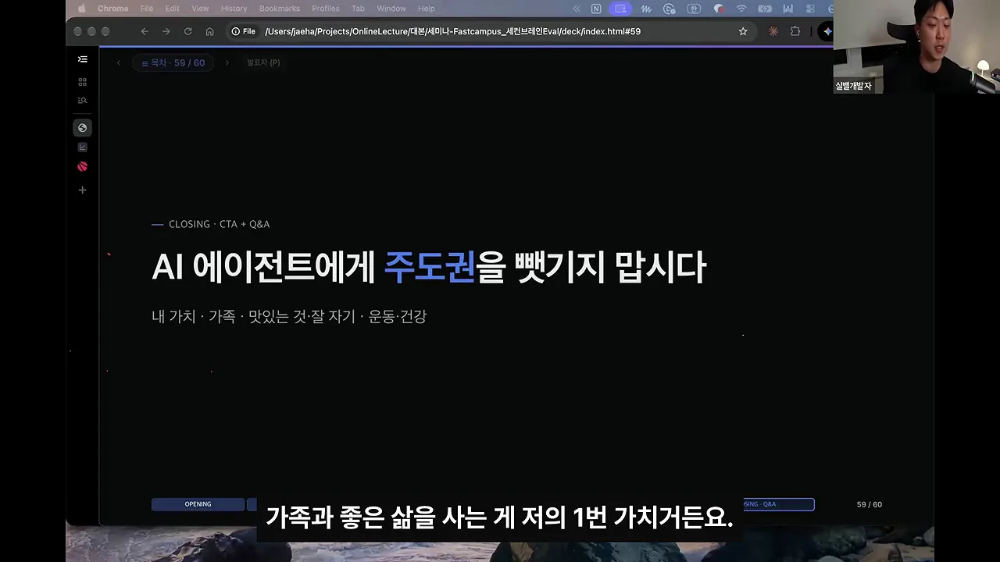
그래서 내 가치가 뭔지 먼저 생각해 보라고 해요. 발표자의 1번 가치는 가족과 좋은 시간을 보내는 거예요. 에이전트는 나를 그 가치로 데려다주는 하나의 도구일 뿐이에요.
AI 에이전트한테 주도권을 뺏기지 말자. 그게 그 오늘 제가 드리고 싶은 마지막 메시지가 될 것 같습니다.
— 영상 01:16:58